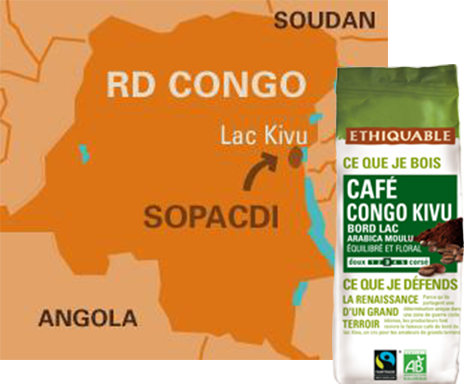

Le café de la rentrée !
Café Congo Kivu équitable & bio
Bord lac - arabica moulu - équilibré et floral
Ce café des Hauts Plateaux du Kivu au Congo, équitable et bio, est cultivé entre 1450 m. et 2000 m. d'altitude. Ses arômes floraux le placent dans la catégorie des grands arabicas africains comme le Moka Sidamo d'Éthiopie.
Les hautes terres volcaniques des bords du lac Kivu à l’Est de la RD Congo accueillent un terroir de café renommé pour ses arômes généreux. Une guerre civile quasi-permanente depuis 15 ans n'est pas venue à bout de la vision commune des 3200 petits cultivateurs de la SOPACDI : "le café, c'est notre futur". Presque abandonnée, la culture du café a repris ses droits à force de conviction, d'appuis techniques et du soutien de plusieurs entreprises engagées dans le commerce équitable en Europe.
